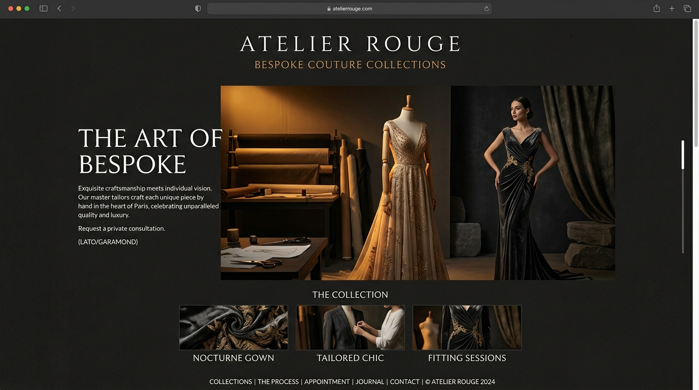

The Pasha
Atelier
An editorial couture experience built to turn browsing into conversation.
STACKReact · Next.js
ROLEDesign & Development
YEAR2026
STATUSLIVE / PRODUCTION

The
mission.
A digital atelier with the calm, confidence and detail of a made-to-measure garment. The interface balances generous whitespace, restrained motion and direct consultation paths.
OPEN LIVE PROJECT ↗01 / EXPERIENCEEditorial rhythmDESIGN · INTERACTION · SYSTEM
02 / OUTCOMEConversion without compromiseFAST · RESPONSIVE · USEFUL